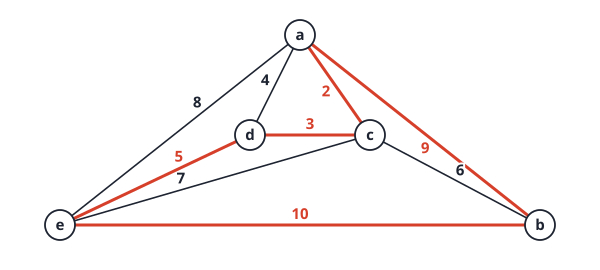
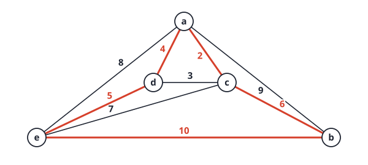
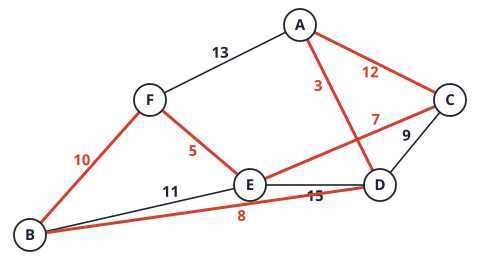

12. NP-completeness
Facts
What is a decision problem, and how is an optimisation problem turned into one?
Answer
A decision problem has a YES/NO answer. An optimisation problem becomes a decision problem by adding a threshold k: “is there a path of weight \le k?”, “is there a clique of size \ge k?”, “is there a tour of cost \le k?”, “is there a subset with weight \le W and profit \ge P?”. If the optimisation problem is easy, so is its decision version. Conversely, binary search on k solves the optimisation problem with a logarithmic number of decision calls.
Define the class P.
Answer
Decision problems solvable by a deterministic algorithm in polynomial time O(n^k) in the input size. Examples: shortest paths, MST, connectivity, sorting, searching.
Define the class NP (two equivalent ways).
Answer
- Decision problems for which a proposed solution (certificate) to a YES instance can be verified in polynomial time by a deterministic algorithm. (2) Problems solvable in polynomial time by a nondeterministic algorithm: a guess phase produces any candidate certificate, and a deterministic verify phase checks it in polynomial time. NP does not mean “not polynomial”.
How are P and NP related, and what is the open question?
Answer
P\subseteq NP (a polynomial-time solver can ignore the certificate and solve the problem directly). The open question is whether P=NP: can everything checkable quickly also be found quickly? Most researchers believe P\ne NP.
What does A\le_pB mean?
Answer
There is a polynomial-time computable function f mapping instances x of A to instances f(x) of B such that x is YES for A if and only if f(x) is YES for B. Intuition: B is at least as hard as A.
State the two consequences of A\le_pB for P.
Answer
If B\in P then A\in P (solve A by transforming and calling the solver for B). Equivalently, if A\notin P then B\notin P. Reductions are also transitive: A\le_pB and B\le_pC give A\le_pC.
Define NP-hard and NP-complete.
Answer
X is NP-hard if every problem in NP reduces to it in polynomial time. X is NP-complete if it is NP-hard and in NP. NP-complete problems are the hardest problems in NP; if any one has a polynomial-time algorithm, then P=NP.
What does the Cook-Levin theorem say, and why does it matter?
Answer
SAT (Boolean satisfiability of a CNF formula) is NP-complete. It is the first NP-complete problem, proved directly. Every other NP-completeness proof then reduces from a known NP-complete problem, so we never again have to reduce every NP problem.
Give the four-step recipe for proving a problem B is NP-complete.
Answer
- Show B\in NP: give a certificate and a polynomial-time verifier. 2. Pick a known NP-complete problem A. 3. Give a polynomial-time reduction f from instances of A to instances of B. 4. Prove correctness both ways: x is YES for A iff f(x) is YES for B.
Which direction is the reduction when you prove B NP-complete? State the common mistake.
Answer
From the known hard problem to the new one: A\le_pB. The common mistake is reducing B to A, which only shows B is no harder than A and proves nothing about B’s hardness.
List the chain of reductions used in the lecture for the canonical problems.
Answer
SAT \to 3-CNF-SAT \to CLIQUE and VERTEX COVER; VERTEX COVER \to HAMILTONIAN CYCLE \to TSP; SUBSET-SUM \to KNAPSACK. All are NP-complete in their decision versions.
What is a certificate for CLIQUE, 3-CNF-SAT and TSP, and what is the verifier’s cost?
Answer
CLIQUE: the vertex set V'; check |V'|\ge k and all pairs adjacent, O(|V|^2). 3-CNF-SAT: a truth assignment; evaluate each clause, O(m). TSP: an ordering of the cities; check it visits each city once and the total weight is \le k, O(n).
Name four ways to cope with an NP-complete problem.
Answer
- Exact search for small n (about \le25): branch and bound or backtracking. 2. Pseudo-polynomial dynamic programming when numbers are small (knapsack O(nW)). 3. Special cases that are in P (2-SAT in linear time; many graph problems on trees). 4. Approximation algorithms or heuristics (2-approximation for vertex cover; Christofides 1.5 for metric TSP).
Problems
Problem 1: certificates
(a) A 3-CNF formula over x_1,x_2,x_3 has clauses (x_1\lor\neg x_2\lor x_3), (\neg x_1\lor x_2\lor x_3), (\neg x_1\lor\neg x_2\lor\neg x_3), (x_1\lor x_2\lor\neg x_3). Is (x_1,x_2,x_3)=(T,T,F) a valid certificate? How long does verification take?
Answer
Evaluate each clause: clause 1 has x_1=T, true. Clause 2 has x_2=T, true. Clause 3 has \neg x_3=T, true. Clause 4 has x_1=T, true. All four are true, so the certificate is valid. Verification costs O(1) per clause, O(m) in total, linear in the input size. (Exhaustive search finds four satisfying assignments out of 8.)
(b) Why does a valid certificate show the problem is in NP, while finding one is not known to be easy?
Answer
NP only requires that a given certificate can be checked in polynomial time, which takes O(m) here. Finding a satisfying assignment may require trying up to 2^n assignments, and no polynomial algorithm is known for 3-SAT (it is NP-complete). Contrast with 2-SAT, which is in P.
Problem 2: a reduction in action
(a) Graph G has vertices 1..5 and edges 12,13,23,24,34,45. Does it have a 3-clique? A 4-clique?
Answer
Yes for 3: \{1,2,3\} and \{2,3,4\} (all pairs adjacent). No for 4: any 4 vertices include a non-adjacent pair (for example \{1,2,3,4\} lacks 14). (Checked by brute force.)
(b) Show how CLIQUE reduces to VERTEX COVER on this graph with k=3, and then with k=4.
Answer
The reduction builds the complement graph \bar G (edges between exactly the non-adjacent pairs): \bar G has edges 14,15,25,35. Then G has a k-clique iff \bar G has a vertex cover of size n-k. For k=3 ask for a cover of size 2: \{1,5\} and \{4,5\} both work, matching the cliques \{2,3,4\} and \{1,2,3\} (a clique’s vertices are exactly the complement of a cover). For k=4 ask for a cover of size 1: no single vertex touches all four edges 14,15,25,35, so there is no cover, matching the absence of a 4-clique. Building \bar G takes O(n^2) time, so the reduction is polynomial.
(c) What does this reduction prove, given that CLIQUE is NP-complete?
Answer
\text{CLIQUE}\le_p\text{VERTEX COVER}, so VERTEX COVER is NP-hard. Together with VERTEX COVER \in NP (certificate: the vertex set, check every edge is covered in O(|E|)), it is NP-complete. This is the pattern of the four-step recipe.
Problem 3: Hamiltonian cycle to TSP
(a) Reduce HAMILTONIAN CYCLE to TSP. Describe the instance you build and the threshold k.
Answer
Given a graph G on n vertices, build a complete weighted graph on the same vertices with weight 1 on edges of G and weight 2 on non-edges. Set k=n. A tour of weight \le n must use only weight-1 edges (a tour has n edges, each of weight at least 1), so it is a Hamiltonian cycle of G. Conversely a Hamiltonian cycle of G is a tour of weight exactly n. The construction takes O(n^2).
(b) Check on two graphs: a 4-cycle 1\text{-}2\text{-}3\text{-}4\text{-}1 with chord 13, and the star with centre 1 and leaves 2, 3, 4.
Answer
The 4-cycle has a Hamiltonian cycle, and the cheapest tour has weight 4, which is \le n=4: YES. The star has no Hamiltonian cycle, and the cheapest tour has weight 6 (it must use weight-2 non-edges), which is >4: NO. Both agree with the reduction. (Verified by trying every tour.)
Problem 4: link back to other chapters
(a) Shortest path is in P but longest simple path is NP-complete (decision version). MST is in P but TSP is NP-complete. What do these pairs suggest about problem structure?
Answer
Both easy problems have a greedy or DP structure: the principle of optimality or the greedy-choice property holds, so local decisions are safe (Dijkstra, Prim, Kruskal). The hard versions lack it: a longest path through part of the graph cannot reuse an optimal sub-path because it may revisit vertices already used (simple paths are not “memoryless”), and a TSP tour must be a single cycle through everything, so locally cheap edges can force expensive ones later.
(b) Knapsack has an O(nC) algorithm, yet is NP-complete. Is that a contradiction?
Answer
No. O(nC) is pseudo-polynomial: polynomial in the value of C, but C is written with \log C bits, so the running time is exponential in the input size. NP-completeness refers to polynomial time in the input size. For small capacities (such as C\le10^6) the DP is perfectly practical.
Past-year questions
Questions from past papers (SC2001/CZ2101/CE2001). Every answer was worked out and checked by code; where a circulated official solution exists it was compared, and disagreements are flagged.
AY25/26 S2 4(b)(i) What is a P problem, an NP problem and an NP-complete problem? If a problem is in P, is it an NP problem?
Answer
P: decision problems solvable in polynomial time by a deterministic algorithm. NP: decision problems whose YES answers can be verified in polynomial time given a certificate. NP-complete: problems in NP to which every problem in NP reduces in polynomial time. Yes, every P problem is in NP (P\subseteq NP): a polynomial-time solver can ignore the certificate and decide the answer itself.
AY25/26 S2 4(b)(ii) Are the following P problems? (1) Given a graph, determine if a path exists that visits each vertex exactly once. (2) Given a connected weighted undirected graph, find a subset of edges that connects all vertices, without cycles, with minimum total weight.
Answer
(1) Not known to be in P. This is the Hamiltonian path problem, which is NP-complete. It is in NP (the certificate is the path), but a polynomial algorithm would imply P=NP. Say “no, unless P=NP”. (2) Yes, it is in P. It is the MST problem, solved by Kruskal or Prim in O(|E|\log|V|) time.
AY25/26 S1 4(c) What is an NP problem? An NP-complete problem? Is the following an NP problem? Justify. “Decision problem for the longest path problem: given a graph G=(V,E) and an integer k, does G contain a simple path of length at least k? A simple path has no cycles; the length is the number of edges.”
Answer
NP: a decision problem whose YES answers can be verified in polynomial time given a certificate. NP-complete: a problem that is in NP and to which every problem in NP reduces in polynomial time (equivalently, in NP and NP-hard).
This problem is in NP. Certificate: a sequence of vertices v_0,\dots,v_\ell. The verifier checks (1) \ell\ge k, (2) all vertices are distinct (no repeats, so the path is simple), (3) each consecutive pair is an edge of G. With an adjacency matrix this takes O(\ell^2)\le O(|V|^2) (the distinctness check) and O(|V|) for the edge checks, which is polynomial.
It is also NP-complete: HAMILTONIAN PATH reduces to it with k=|V|-1, since a simple path with |V|-1 edges visits every vertex. This was not asked, but it shows the contrast with shortest path (in P, by Dijkstra).
AY24/25 S2 4(b)(i) What is a P problem, an NP problem, and an NP-complete problem? If a problem is in P, is it an NP problem?
Answer
- P: decision problems that a deterministic algorithm solves in polynomial time.
- NP: decision problems where a proposed solution (a certificate) can be verified in polynomial time.
- NP-complete: problems that are in NP and every problem in NP reduces to them in polynomial time (so they are the hardest problems in NP).
- Yes, P\subseteq NP. If you can solve a problem in polynomial time, you can verify a certificate by ignoring it and solving the problem again. Whether P=NP is open.
AY24/25 S2 4(b)(ii) Are the following P problems? (a) Given a set of integers and a target sum, determine if there is a subset that adds up to the target. (b) Given an unweighted graph and two vertices, determine the shortest path (the path with the fewest edges) between the two vertices.
Answer
(a) Not known to be in P. This is SUBSET SUM, which is NP-complete. The DP in O(nS) (S the target) is pseudo-polynomial, not polynomial: S takes only \lg S bits to write down, so O(nS) is exponential in the input size. (If the target is written in unary, or S is bounded by a polynomial in n, the DP is polynomial.)
(b) Yes. BFS from the source finds a shortest path in O(V+E). (As a decision question, “is there a path of at most k edges?”, it is also in P.)
Link. This is the “easy vs hard cousin” pair again: shortest path is in P but longest simple path is NP-complete, MST is in P but TSP is NP-complete, and here shortest path is in P but subset sum has no known polynomial algorithm. The same pseudo-polynomial remark applies to 0/1 knapsack (2425 S1 4(a)C).
AY24/25 S1 4(a) Which of the following statement(s) is (are) correct? A. An algorithm is said to be polynomially bounded if its best-case complexity is bounded by a polynomial function of the input size. B. A problem D is NP-complete if it is in NP and another problem Q in NP is reducible to D in polynomial time. C. The 0/1 Knapsack problem is a P problem because there is a dynamic programming solution. D. The Travelling Salesman Problem (TSP) is in NP because it cannot be solved in polynomial time. E. TSP is in NP because there is an O(n!) solution. F. None of the above is correct.
Answer
F (none).
- A false: polynomially bounded refers to the worst case.
- B false: every problem in NP must reduce to D (or, equivalently, some known NP-complete problem reduces to D). One problem Q is not enough.
- C false: the DP takes \Theta(nW), which is polynomial in the value W but exponential in the number of bits of W (pseudo-polynomial). The decision version of 0/1 knapsack is NP-complete.
- D false: being in NP means YES answers can be verified in polynomial time. “Hard to solve” is not the reason.
- E false: an O(n!) brute force shows only that the problem is decidable. TSP is in NP because a proposed tour can be checked in polynomial time (sum the edges and compare with the bound).
AY23/24 S2 4(b)(i) What is an NP problem?
Answer
NP is the class of decision problems (yes/no) for which a proposed solution to a YES instance, a certificate, can be verified in polynomial time by a deterministic algorithm. Equivalently, the problems that a nondeterministic algorithm solves in polynomial time (guess a certificate, then check it). “NP” stands for nondeterministic polynomial, not for “not polynomial”. Examples: SAT, Hamiltonian cycle, subset sum, clique.
AY23/24 S2 4(b)(ii) For each of the following sentences, state whether the sentence is known to be true, false, or unknown. Justify your answers with 1 to 2 sentences. (a) If a problem is in NP, it must also be in P. (b) If a problem is NP-complete, it must also be in NP. (c) There exists an NP-complete problem X that can be solved with an efficient deterministic algorithm, even if there is none for CIRCUIT-SAT. (Hint: CIRCUIT-SAT is the decision problem of determining whether a given Boolean circuit has an assignment of its inputs that makes the output true.)
Answer
(a) Unknown. We know P\subseteq NP, but whether every NP problem is also in P is exactly the open question P=NP. (For one particular easy problem the statement is of course true, but the sentence claims it for every problem in NP, and that holds exactly when P=NP.)
(b) True. By definition, a problem is NP-complete if it is in NP and every NP problem reduces to it in polynomial time (NP-hard). Membership in NP is part of the definition.
(c) False. CIRCUIT-SAT is in NP, so it reduces in polynomial time to the NP-complete problem X. If X had an efficient deterministic algorithm, then “reduce, then solve X” would give an efficient deterministic algorithm for CIRCUIT-SAT as well. That contradicts the assumption that there is none. So no NP-complete problem can be efficiently solvable unless every NP-complete problem (CIRCUIT-SAT included) is.
Link. (c) is the reason a proof of NP-completeness has the form “reduce a known NP-complete problem to the new one”. Hardness travels forward along a reduction (A\le_pB means that if B is easy then A is easy, equivalently if A is hard then B is hard), so all NP-complete problems stand or fall together. The three sentences also show the logical shape of the field: (b) is a definition, (c) is a consequence of that definition, and (a) is the open question.
AY23/24 S1 4(b) (Not in your course: the shortest-link heuristic is not in your slides; Lecture 12 introduces TSP only. The greedy method itself is the same as Kruskal’s.) Solve the travelling salesman problem in Figure Q4 using the Shortest-link algorithm. Give the sequence of edges chosen by the shortest-link algorithm for the path of the travelling salesman and the total distance travelled. Is it an optimal solution? Give reasons why the Greedy heuristic is a suitable approach for solving the travelling salesman problem.

Answer
Shortest-link rule. Go through the edges in increasing order of weight. Accept an edge unless it would give some vertex degree 3, or would close a cycle that does not yet contain all vertices. The accepted edges form the tour when it is complete.
| edge | weight | decision |
|---|---|---|
| a-c | 2 | accept |
| c-d | 3 | accept |
| a-d | 4 | reject: closes the cycle a-c-d without b and e |
| d-e | 5 | accept |
| c-b | 6 | reject: c would have degree 3 |
| c-e | 7 | reject: c would have degree 3 |
| a-e | 8 | reject: closes the cycle a-c-d-e without b |
| a-b | 9 | accept |
| e-b | 10 | accept: closes the full tour |
Sequence: a-c, c-d, d-e, a-b, e-b. Tour a - c - d - e - b - a, total 2+3+5+10+9=29.

Not optimal. Trying all 12 directed Hamiltonian cycles from a (the graph has no edge b-d; code) gives total costs 27, 29, 31 and 33. The optimum is 27, the tour a - c - b - e - d - a with 2+6+10+5+4=27 (the same cycle read in the other direction is the only other tour with that cost).

The greedy method took the cheap edges a-c, c-d, d-e early, which forced the two most expensive edges 9 and 10 at the end. It never reconsiders an early choice.
Why a greedy heuristic is still suitable.
- TSP is NP-hard (its decision version is NP-complete, see the NP page), so no polynomial algorithm is known; an exact search tries up to (n-1)!/2 tours, or O(n^22^n) with dynamic programming.
- Shortest-link needs one sort of the edges and a cycle check: O(E\lg E), polynomial.
- It does not promise the optimum, but it usually gives a tour of reasonable length quickly; for large n a good tour in seconds is worth more than the perfect tour never.
- One caveat: the greedy rule can fail on a graph that is not complete, because it may leave a vertex that cannot be linked into a tour even though a Hamiltonian cycle exists. Figure Q4 lacks the edge b-d and the greedy still succeeds.
Link. Shortest-link is Kruskal’s algorithm with a degree limit of 2: the same sorted edge list, the same cycle test (Union-Find), plus one extra rejection rule. Kruskal’s greedy is exactly right for MST because of the cut property; with the degree constraint no such property holds, so the greedy is only a heuristic. Where a greedy method is exact and where it is only a guess is the main theme of the greedy and NP pages.
AY22/23 S2 4(b)(i) Please explain the definition of the NP-complete problem.
Answer
A problem D is NP-complete if (1) D is in NP (a YES answer has a certificate that can be verified in polynomial time) and (2) D is NP-hard: every problem Q in NP can be reduced to D in polynomial time (Q\le_pD). Consequently, if any NP-complete problem is solved in polynomial time, then P=NP. Examples from the lectures: CIRCUIT-SAT, SAT, 3-CNF-SAT, CLIQUE, VERTEX-COVER, HAMILTONIAN-CYCLE, TSP (decision version).
AY22/23 S2 4(b)(ii) Explain whether the following problem is a P/NP problem. “Find the minimal number of colours m, such that no two adjacent vertices are coloured using the same colour on a graph with n vertices.”
Answer
This is the chromatic number problem, an optimisation problem, not a decision problem, so strictly it is not “in NP” (NP contains only yes/no problems). What can be said:
- Its decision version “can the graph be coloured with k colours?” is in NP: a colouring is a certificate and is verified in O(|V|+|E|) by checking each edge. It is NP-complete for k\ge3 (beyond the lecture; for k=2 it is the bipartite test, which is in P).
- The optimisation problem is NP-hard: if we could compute the minimum m in polynomial time, we could answer “is m\le k?” in polynomial time. So it is not known to be in P, and is in P only if P=NP.
- An algorithm that tries all colourings is exponential: m^n assignments.
(Flag: the wording “P/NP problem” is loose. The safe answer states the difference between the optimisation and decision versions, as above. A grader expecting one word probably wants “NP-complete (decision version) / NP-hard”, not “in P”.)
Link. The optimisation and decision versions are tied by a polynomial number of decision queries (binary search on k, or just try k=1,2,\dots), so one is polynomial exactly when the other is. That is why NP-completeness results are stated for decision problems without loss of generality.
AY22/23 S2 4(b)(iii) For each of the following sentences, state whether the sentence is known to be true, false, or unknown. (a) If a problem is NP-complete, it must also be in NP. (b) If a problem is NP-complete, it must not be in P. (c) If a problem is not in P, it must be NP-complete.
Answer
(a) True. Being in NP is part of the definition of NP-complete.
(b) Unknown. An NP-complete problem is in P exactly when P=NP, and that is the open question. So the sentence is true if P\ne NP (which most researchers believe) and false if P=NP; nobody has proved either.
(c) False. Not being in P does not make a problem NP-complete, because it may lie outside NP, or inside NP but not NP-complete. A proven example: the halting problem is not in P (it is undecidable) and is not NP-complete, since it is not even in NP (every NP problem is decidable). (Beyond the lecture.) Another: any problem that is provably harder than NP, such as one that needs exponential space.
Link. The three sentences go in order from definition (a), to the open question (b), to a non sequitur (c): “hard” and “NP-complete” are different notions. NP-complete is a narrow class inside NP; “not in P” is a vast class that also contains undecidable problems.
AY22/23 S1 4(b) What is an NP problem, and an NP-complete problem? Is the following problem an NP problem? Justify your yes/no answers. “Is it possible to colour the vertices of a graph by k colours such that no two adjacent vertices have the same colour?”
Answer
NP problem. A decision problem (yes/no) for which a given solution, a certificate, to a YES instance can be verified in polynomial time by a deterministic algorithm. Equivalently, solvable in polynomial time by a nondeterministic algorithm (guess a certificate, then check it). “NP” is not “not polynomial”.
NP-complete problem. A problem D that is (1) in NP and (2) NP-hard: every problem Q in NP reduces to D in polynomial time (Q\le_pD).
Is graph k-colouring an NP problem? Yes. It is a decision problem. If the answer is yes, a certificate is a colouring c(v)\in\{1..k\} for every vertex. It can be checked in O(|V|+|E|) time: for every edge \{u,v\} test c(u)\ne c(v), and test that every colour is at most k. Both tests are polynomial. So k-colouring is in NP.
(Beyond the lecture: for k\ge3 the problem is NP-complete, and for k=2 it is in P, since it asks whether the graph is bipartite, which BFS answers in linear time. The question only asks about NP.)
Link. “In NP” is a statement about checking, not solving. The colouring verifier is the same shape as every NP verifier in the NP page: a short certificate plus a polynomial test. This question is the same pattern as the Hamiltonian cycle and subset-sum membership checks.
AY21/22 S2 4(b)(i) What is an NP-complete problem? For each of the following sentences, state whether the sentence is known to be true, false, or unknown. (a) If a problem is in P, it must also be in NP. (b) If a problem is in NP, it must also be in P. (c) If a problem is NP-complete, it must also be in NP.
Answer
NP-complete. A problem is NP-complete if it is in NP (a YES answer has a certificate that can be verified in polynomial time) and NP-hard (every problem in NP reduces to it in polynomial time).
(a) True. A polynomial-time algorithm that solves the problem can also serve as the verifier (ignore the certificate and solve the instance), so P\subseteq NP.
(b) Unknown. It holds for every problem exactly when P=NP, which is still open. (For individual easy problems it is of course true, but the sentence claims it for every problem in NP.)
(c) True. Being in NP is part of the definition of NP-complete.
Link. The three sentences are P\subseteq NP (proved), NP\subseteq P (open) and NP-complete \subseteq NP (definition). Compare AY2324 S2 4(b)(ii) and AY2223 S2 4(b)(iii), which test the same trio.
AY21/22 S2 4(b)(ii) Explain whether the following problems are P problems. If the problem is not P, try to solve it with a polynomial-time heuristic algorithm. Describe your solution. No pseudocode is needed. Vertex colouring problem: find the minimal number of colours m, such that no two adjacent vertices are coloured using the same colour on a graph with n vertices. Linear programming: maximize a linear function subject to linear inequality constraints.
Answer
Vertex colouring (minimum number of colours): not known to be in P. Its decision version “can the graph be coloured with k colours?” is NP-complete for k\ge3 (beyond the lecture), so the optimisation problem is NP-hard. No polynomial algorithm is known, and one would give P=NP.
Polynomial-time heuristic: greedy colouring. Visit the vertices in some order (for example in decreasing order of degree, the Welsh-Powell rule). Give each vertex the smallest colour not used by its already coloured neighbours. The cost is O(n+|E|) after the ordering (plus O(n\log n) to sort the degrees), and it uses at most \Delta+1 colours, where \Delta is the largest degree. It is not optimal in general: on a bipartite graph (optimum 2) the order of visiting can force more. Example: take u_1,u_2,u_3,v_1,v_2,v_3 with u_i adjacent to v_j for i\ne j. Visiting u_1,v_1,u_2,v_2,u_3,v_3 gives u_1\to1, v_1\to1, u_2\to2, v_2\to2, u_3\to3, v_3\to3: 3 colours, while the best is 2 (code check). Visiting all u’s first gives 2.
Linear programming: it is in P. Polynomial-time algorithms exist: the ellipsoid method (Khachiyan, 1979) and interior-point methods (Karmarkar, 1984). The simplex method is exponential in the worst case but fast in practice. So no heuristic is needed. (Both facts are beyond the lecture.)
Link. Two problems that look alike (optimise a function under constraints) fall on opposite sides of the P versus NP line. LP is easy because the feasible region is convex; colouring is a discrete problem with no such structure. The greedy colouring heuristic has the same flavour as shortest-link for TSP (AY2324 S1 4(b)): fast, plausible and with no optimality guarantee.
AY20/21 S2 4(a) Show that if NP = P, then NP-Complete = NP = P \subset NP-hard.
Answer
Assume P=NP.
- NP-complete \subseteq NP = P. By definition every NP-complete problem is in NP.
- NP \subseteq NP-complete. Let X be any problem in NP = P (not trivial: it has at least one YES and one NO instance, x_{\text{yes}} and x_{\text{no}}). To show X is NP-hard take any problem Q in NP. Since NP = P, Q has a polynomial-time algorithm. The reduction Q\le_pX is: given an instance q of Q, solve it in polynomial time, and output x_{\text{yes}} if the answer is YES and x_{\text{no}} otherwise. This is a polynomial-time reduction that preserves the answer. So X is NP-hard, and since it is also in NP it is NP-complete. Hence NP \subseteq NP-complete.
- From 1 and 2, NP-complete = NP = P.
- P \subset NP-hard (proper). Every NP-complete problem is NP-hard, so P = NP-complete \subseteq NP-hard. The inclusion is strict because NP-hard also contains problems that are not in NP, for example the halting problem (undecidable, so not in P, and still NP-hard since every NP problem reduces to it). \blacksquare
(Flags: the two trivial problems, the empty language and the set of all strings, are in P but are not NP-complete, since no reduction can map a YES and a NO instance onto them; the statement “NP-complete = NP” is for the non-trivial problems, which is what the question intends. The halting problem example is beyond the lecture.)
Link. This is why the P versus NP question is so central: if the answer is “equal”, the whole class NP collapses into one level of difficulty, “every non-trivial problem in P is complete”. If the answer is “not equal”, the three classes are all different (Ladner’s theorem even adds a layer in between, beyond the lecture). Compare the three true/false/unknown sentences in AY2324 S2 4(b)(ii) and AY2122 S2 4(b)(i).
AY20/21 S2 4(b) For a conventional computer, n bits can represent only 1 state at a time (e.g., 4-bit 1000 or 0101); for a quantum computer, amazingly, n qu-bits can represent 2^n states at the same time. Therefore, someone proposes to show NP = P by using a quantum computer. Do you believe that such a quantum computer can make NP = P? Justify your opinion. (Hint: Is a quantum computer non-deterministic?)
Answer
No. (Beyond the lecture, so the answer is a short argument.)
- A quantum computer is not a nondeterministic machine. NP is defined by a nondeterministic machine that guesses a certificate and is credited with success if any branch accepts. A quantum computer is a physical device that evolves deterministically (unitary evolution of amplitudes) and, when measured, returns one random outcome with probability given by the amplitudes. It does not hold 2^n independent answers that you can read out; a measurement collapses the superposition to a single state.
- Being able to hold 2^n states does not mean you can pick the right one. To solve an NP problem by search you need the machine to reveal a satisfying assignment among the 2^n. Without extra structure, Grover’s algorithm needs about \sqrt{2^n}=2^{n/2} steps, which is still exponential, and it is known to be optimal for unstructured search.
- P versus NP is a statement about the machine models, and a classical computer can simulate a quantum computer (with an exponential slowdown). Building a quantum computer therefore cannot prove or disprove P=NP; the class BQP of quantum-polynomial problems is not believed to contain the NP-complete problems. (Shor’s algorithm factors integers in polynomial time on a quantum computer, but factoring is not known to be NP-complete.)
Link. The “magic” of nondeterminism in NP is one-sided: guess and verify. Quantum parallelism gives a quadratic search speed-up at best for unstructured problems, which is a different resource. Notice again the lecture’s definition of NP as “verifiable in polynomial time”: a verifier is deterministic, and it is the guessing that no real machine has.
AY19/20 S1 4(a) The Travelling Salesman Problem for the cities is given in Figure Q4. (Not in your course: the shortest-link and nearest neighbour heuristics are not in your slides, although this predecessor paper teaches them. They are worked here.) (i) Show the total distance and the sequence of the edges of the graph chosen by using the Shortest-link algorithm. (ii) Show the total distance and the sequence of the edges chosen by using the Nearest Neighbour algorithm, starting from node A.

Answer
Edges: AF\,13, AC\,12, AD\,3, FE\,5, FB\,10, CE\,7, CD\,9, ED\,15, EB\,11, BD\,8. There is no edge AB, FC, FD or CB.
(i) Shortest-link: take edges in increasing order; reject an edge that would give a vertex degree 3 or close a cycle before all vertices are in the tour.
| edge | weight | decision |
|---|---|---|
| AD | 3 | take |
| FE | 5 | take |
| CE | 7 | take |
| BD | 8 | take |
| CD | 9 | reject: D would have degree 3 (A, B, C) |
| FB | 10 | take |
| EB | 11 | reject: B would have degree 3 |
| AC | 12 | take: closes the tour |
Sequence AD, FE, CE, BD, FB, AC; total distance 3+5+7+8+10+12=45. The tour is A-D-B-F-E-C-A.
(ii) Nearest neighbour from A: from the current city go to the nearest unvisited city.
- A: neighbours D (3), C (12), F (13): go to D (3).
- D: unvisited B (8), C (9), E (15): go to B (8).
- B: unvisited F (10), E (11): go to F (10).
- F: unvisited E (5) (and A is visited): go to E (5).
- E: unvisited C (7): go to C (7).
- C: all visited: return to A (12).
Sequence AD, DB, BF, FE, EC, CA; total distance 3+8+10+5+7+12=45.

Both heuristics give the same tour, length 45, and it is optimal: of the 10 directed Hamiltonian cycles from A the lengths are 45, 53, 58, 65, 70 (code). The paper does not ask whether the tour is optimal; here the greedy choices happen to be right.
Link. Compare AY2324 S1 4(b), where shortest-link produced 29 against an optimum of 27. Both heuristics are cheap (O(E\log E) and O(V^2)) and neither guarantees the optimum; on this graph the cheap edges AD, FE, CE, BD all belong to the best tour, which is why greedy succeeds.
AY19/20 S1 4(b) The graph colouring problem is to determine the minimum number of colours needed to colour a given undirected graph G such that each node is assigned a different colour from all its neighbours. State its decision problem.
Answer
Graph k-colouring (decision version): given an undirected graph G and a natural number k, can G be coloured with at most k colours such that every node has a colour different from all its neighbours?
The minimisation problem in the question is an optimisation problem, and NP is defined for yes/no problems, so it is turned into a decision problem by adding the bound k. The optimisation answer is the smallest k for which the decision answer is yes.
(Flag: the circulated solution says “can G be coloured with more than k colours”. That is wrong: with a k below the number of nodes you can always use more colours, so the question would be trivial. The standard bound is “at most k”.)
Link. The decision problem is in NP: a colouring is a certificate and each edge is checked in O(1) (see AY2223 S1 4(b)). Answering the decision problem for k=1,2,3,\dots solves the optimisation problem, so the two are equally hard.
AY19/20 S1 4(c) The clique problem is the optimization problem of finding a clique of maximum size in a graph. (i) Find the number of vertex subsets of size 4 in a 7-vertex graph. (ii) Design a brute-force search algorithm for the decision problem of the clique problem. Write down the pseudo code. You may assume that the functions of combination and permutation are given. (iii) Write down the time complexity of the algorithm in Q4(c)(ii) in Big-O notation.
Answer
(i) \binom74=\dfrac{7!}{4!\,3!}=\mathbf{35} subsets.
(ii) The decision problem: given G and an integer k, does G contain a clique (a set of vertices in which every two are joined by an edge) of size k? (A clique with more than k vertices contains one of size exactly k, so testing size k is enough.)
cliqueExists(G, k):
for each subset S of k vertices of G: // combination(n, k): C(n,k) subsets
isClique = true
for each pair (u, v) of distinct vertices in S: // k(k-1)/2 pairs
if there is no edge (u, v) in G: isClique = false; break
if isClique: return YES
return NO(iii) There are \binom nk subsets, and each needs up to \binom k2=O(k^2) edge tests: O\!\big(\binom nk k^2\big), which is O(n^kk^2) since \binom nk\le n^k. For n=7, k=4 that is 35 subsets with 6 pairs each. This is polynomial only if k is a fixed constant; when k grows with n (for example k=n/2) it is exponential, as expected for an NP-complete problem. (The brute force was tested against a second implementation on 300 random graphs, all answers agreeing.)
Link. The algorithm is the typical certificate search: the certificate is the set S and the verification (all pairs adjacent) is the polynomial part; the exponential part is the number of candidates. Compare AY2324 S2 4(b)(ii) and the NP page: finding is hard, checking is easy.
AY18/19 S2 4 We introduce the longest path problem (LP): finding a simple path of maximum length in a graph. A path is simple if it does NOT have repeated vertices. Suppose that the graph has non-negative integer weights. (a) What is the corresponding decision problem of LP? (b) Show that LP is NP. (c) Show that LP is NP-hard (Hint: try to reduce from the Travelling Salesman Path problem (TSP)). (d) Show that LP is NP-complete.
Answer
(a) Decision problem: given a graph G with non-negative integer edge weights and an integer k, does G contain a simple path of length at least k? (Length = total weight of the edges.) The paper’s solution says “longer than k”; “at least k” and “more than k” are equivalent up to replacing k by k-1.
(b) LP is in NP. The certificate is a path, a sequence of at most |V| vertices. A verifier checks in polynomial time that (1) consecutive vertices are joined by an edge, (2) no vertex repeats (a scan or a marker array, O(|V|^2) or O(|V|)), and (3) the sum of the edge weights is at least k. All three are polynomial. (The search for a longest simple path needs, as far as we know, an exponential number of candidate paths, but verifying one is easy.)
(c) LP is NP-hard: reduce the Travelling Salesman Path problem to it. TSP-Path (decision): given a complete graph with non-negative integer weights w and a bound B, is there a Hamiltonian path (a simple path through all n vertices) of total weight at most B? This problem is NP-hard (it is the TSP with the return edge removed).
Reduction: let S be the sum of all weights and M=S+1. Build the same graph with new weights w'(e)=M-w(e)\ge1 (still non-negative integers) and ask LP with the bound k=(n-1)M-B.
- A simple path with j edges has w'-length jM-w(\text{path}). Because 0\le w(\text{path})\le S<M, this lies in ((j-1)M,\,jM]. So a path with more edges is always longer; the longest simple path is therefore a path with the most edges, a Hamiltonian path with n-1 edges (the graph is complete, so one exists).
- For a Hamiltonian path P: w'(P)=(n-1)M-w(P), so w'(P)\ge(n-1)M-B exactly when w(P)\le B.
So the TSP-Path instance is a YES instance if and only if the LP instance is a YES instance. The construction takes polynomial time (O(n^2) weights). Hence LP is NP-hard. (The reduction formula was tested on 100 random complete graphs with n=4 to 6: the longest simple path in w' always had length (n-1)M-(\text{shortest Hamiltonian path}).)
(d) LP is NP-complete, because it is in NP by (b) and NP-hard by (c). \blacksquare
Link. Turning “minimise” into “maximise” is done by subtracting from a big constant, and the constant has to be big enough (M>S) that the number of edges dominates; this is the same trick as turning a shortest-path problem into a longest-path problem. In an acyclic graph the longest path is easy (O(V+E) with DP on a topological order, see the DP page), so the NP-hardness comes entirely from allowing cycles (the simplicity condition). Compare the Hamiltonian-cycle and TSP chain on the NP page.
AY18/19 S1 2(c) Given a knapsack of capacity C and n objects with sizes s_1,\dots,s_n and profits p_1,\dots,p_n, the optimisation problem is to find the largest total profit of any subset of the objects that fits in the knapsack. State the decision problem version of the knapsack problem. Explain briefly whether the problem is in NP.
Answer
Decision version: given the capacity C, the sizes s_i, the profits p_i and a target profit P, is there a subset of the objects with total size \le C and total profit \ge P?
It is in NP. A certificate is the subset itself (a list of at most n indices). A deterministic verifier adds the sizes and compares the sum with C, adds the profits and compares with P: O(n) steps, polynomial in the input size. So a YES answer can be verified in polynomial time, which is the definition of NP.
(Note on a trap: the DP algorithm runs in O(nC), but C is written in \log C bits, so O(nC) is exponential in the input size. Knapsack is therefore still NP-complete, as the DP page explains.)
Link. The optimisation and decision versions are linked by binary search on P (about \log of the total profit decision queries), so each is polynomial exactly when the other is. Compare the colouring and clique decision versions (AY1920 S1 4(b), 4(c)).
Tutorials
Tutorial 12 Q1: Classification of Decision Problem into P vs. NP
Is the following problem in the class P or NP? Justify your answer:
Given a network of cities G with non-negative edge weights and a positive integer k. Are the shortest paths between all pairs of cities not longer than k?
Answer
- Classification: The problem is in P (and consequently in NP).
- Justification:
- Dijkstra’s algorithm computes the shortest paths from a single source vertex to all other vertices in O(|V|^2) time (using an adjacency matrix) or O(|E| + |V| \log |V|) time (using a min-heap).
- Running Dijkstra’s algorithm from every vertex u \in V computes all-pairs shortest paths in |V| \times O(|V|^2) = O(|V|^3) time. (Alternatively, the Floyd-Warshall dynamic programming algorithm solves all-pairs shortest paths directly in \Theta(|V|^3) time).
- Once all-pairs shortest path distances dist[u][v] are computed, checking whether every pairwise distance satisfies dist[u][v] \le k takes O(|V|^2) comparisons.
- Total execution time is O(|V|^3), which is strictly bounded by a polynomial in the input size.
- Because a deterministic algorithm can solve this decision problem in polynomial time, the problem belongs to Class P.
Tutorial 12 Q2: Proving the CLIQUE Problem is in NP
Given a graph G = (V, E) and positive integer k \le |V|. The CLIQUE problem asks whether G contains a k-clique (a subset V' \subseteq V of size |V'| \ge k such that every pair of vertices in V' is connected by an edge in E). Show that the CLIQUE problem is in NP.
Answer
To prove CLIQUE \in NP, we specify a polynomial-time verification algorithm:
- Certificate (Witness): The candidate subset of vertices V' \subseteq V.
- Verification Protocol:
- Step 1: Verify that every vertex in V' belongs to V. Time: O(|V'|) \le O(|V|).
- Step 2: Verify that |V'| \ge k. Time: O(1) (or O(|V|)).
- Step 3: For every distinct pair of vertices u, v \in V', verify that edge (u, v) \in E.
- Number of pairs checked: \binom{|V'|}{2} = \frac{|V'|(|V'| - 1)}{2} = O(|V|^2).
- Checking edge existence takes O(1) in an adjacency matrix, or O(|V|) in an adjacency list.
- Total edge verification time: O(|V|^2).
- Conclusion: The verification algorithm runs in deterministic O(|V|^2) polynomial time. If G contains a k-clique, the verifier outputs YES given V'. Thus, CLIQUE \in NP.
Tutorial 12 Q3: Proving 3-CNF-SAT is in NP
In the 3-CNF-SAT problem, we are given a set of boolean variables U = \{u_1, \dots, u_n\} and a collection of clauses C = \{c_1, \dots, c_m\} where each clause c_j is a disjunction (\lor) of exactly 3 literals. The problem asks if there exists a truth assignment satisfying all clauses simultaneously. Show that 3-CNF-SAT is in NP.
Answer
- Certificate: An assignment of boolean truth values to the n variables: A = (u_1 \in \{T, F\}, u_2 \in \{T, F\}, \dots, u_n \in \{T, F\}).
- Verification Protocol:
- For each of the m clauses c_j = (l_{j,1} \lor l_{j,2} \lor l_{j,3}):
- Evaluate the truth value of the 3 literals under assignment A.
- The clause evaluates to
Trueif at least one literal isTrue. This requires at most 3 lookups: O(1) time per clause.
- Total verification time across all m clauses: m \times O(1) = \mathbf{O(m)}.
- For each of the m clauses c_j = (l_{j,1} \lor l_{j,2} \lor l_{j,3}):
- Conclusion: The verifier validates the certificate in deterministic linear time O(m) = O(\text{Input Size}). Therefore, 3-CNF-SAT \in NP.
Tutorial 12 Q4: Proving 3-CNF-SAT is NP-Complete via Reduction from SAT
Given that SAT (satisfiability of arbitrary CNF formulas) is NP-complete, prove that 3-CNF-SAT is also NP-complete.
Answer
1. Membership in NP: From Tutorial 12 Q3, a truth assignment certificate can be verified across all m clauses in O(m) linear time. Thus 3-CNF-SAT \in NP.
2. Reduction: \text{SAT} \le_p \text{3-CNF-SAT}: We must transform an arbitrary CNF formula \phi = C_1 \land C_2 \land \dots \land C_m where clauses have arbitrary length into a 3-CNF formula \phi' where every clause has exactly 3 literals. Transform each clause C = (x_1 \lor x_2 \lor \dots \lor x_k) independently:
- Case 1 (k = 1 literal, C = (x_1)): Introduce two new dummy variables y_1, y_2 and expand into 4 clauses of 3 literals: C' = (x_1 \lor y_1 \lor y_2) \land (x_1 \lor \neg y_1 \lor y_2) \land (x_1 \lor y_1 \lor \neg y_2) \land (x_1 \lor \neg y_1 \lor \neg y_2) (For all 4 clauses to be true simultaneously, x_1 must evaluate to True).
- Case 2 (k = 2 literals, C = (x_1 \lor x_2)): Introduce one dummy variable z_1 and expand into 2 clauses: C' = (x_1 \lor x_2 \lor z_1) \land (x_1 \lor x_2 \lor \neg z_1) (Independent of whether z_1 is True or False, x_1 \lor x_2 must be True).
- Case 3 (k = 3 literals): Retain clause unmodified: C' = (x_1 \lor x_2 \lor x_3).
- Case 4 (k > 3 literals, C = (x_1 \lor x_2 \lor \dots \lor x_k)): Introduce k - 3 auxiliary variables w_1, w_2, \dots, w_{k-3} and construct a chain of k - 2 clauses: \begin{aligned} C' ={} & (x_1 \lor x_2 \lor w_1) \land (\neg w_1 \lor x_3 \lor w_2) \\ & \land (\neg w_2 \lor x_4 \lor w_3) \land \dots \land (\neg w_{k-3} \lor x_{k-1} \lor x_k) \end{aligned}
3. Correctness & Equivalence Proof:
- If original clause C is satisfied:
At least one literal x_i = \text{True}.
- If i \in \{1, 2\}, setting w_1 = w_2 = \dots = w_{k-3} = \text{False} satisfies all subsequent clauses.
- If i \in \{k-1, k\}, setting all w_j = \text{True} satisfies all preceding clauses.
- If 2 < i < k-1, set w_1 \dots w_{i-2} = \text{True} and w_{i-1} \dots w_{k-3} = \text{False}, satisfying every clause in the chain.
- If all x_i = \text{False}: The chain collapses to: (w_1) \land (\neg w_1 \lor w_2) \land \dots \land (\neg w_{k-3}), which requires w_1 \implies w_2 \implies \dots \implies w_{k-3} \implies \text{False}, making simultaneous satisfaction impossible.
- If original clause C is satisfied:
At least one literal x_i = \text{True}.
4. Complexity: A clause of k literals yields at most k - 2 new 3-literal clauses and k - 3 variables. The reduction runs in O(|\phi|) linear time. Therefore, \text{SAT} \le_p \text{3-CNF-SAT}, establishing that 3-CNF-SAT is NP-Complete.